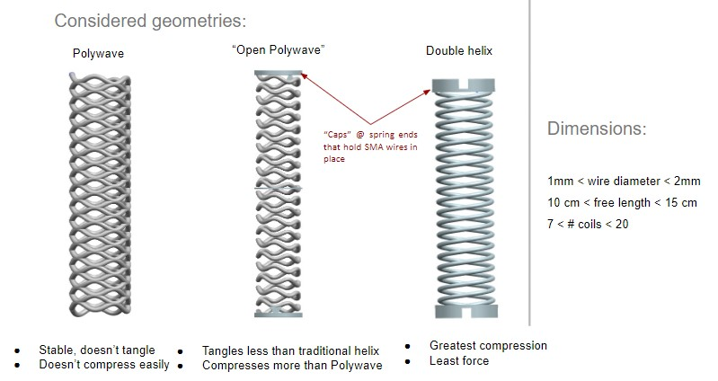

Bioinspired Soft Robot (STARFISH)
Overview
STARFISH is a bioinspired multilimbed soft robot. A single limb prototype is created that consists of the SMA wire actuators, a backbone spring-shaped structure to keep the SMAs under load, a protective silicone skin, and an electrical interface. Challenges inherent to working with SMAs in creating robust mechanical and electrical interfaces, as well as providing predictability in actuation direction and force, are addressed through the limb design, and a baseline characterization of the design
Design
The main three spring designs are shown below along with some of their merits and demerits. Additionally, a single helix design was also tested. The best option was the double helix because it was a good balance between flexibility and rigidity. The polywave design was too rigid and limited the flexibility and bend of the soft limb design. However, the open polywave design was too open and was difficult to keep bent straight causing it to be much more difficult to be assembled. The double helix spring allows over 90 degrees of flexibility and returns to its straight upright position easily which is why it was chosen.
Locomotion
The limbs use Shape Memory Alloy (SMA) wires for locomotion. These wires are much lighter than other source of locomotion. They're also more flexible. However, it was determined that using SMA springs instead of wires is a better design since the total displacement, and consquently bend, is increased with a spring since it's longer than a straight wire. This can affect the displacement from a few percent to over fifty percent of its original size. Four of these SMA springs are used so the limb can bend in every direction. An excel sheet is attached showing the analysis done on the efficiency of SMA springs with different loads and at different voltages.
Material Selection
The selection of the material is important to this project in order for the limb to be compliant yet robust. PETG ended up being selected as the best material because it's a good balance in between TPU which is too flexible and PLA which is too brittle.
PLA
- Default filament
- Easy to print
- Very very brittle
TPU
- 98A is too soft to use with most spring designs
- Desired 75-85D hard to source
- Used for the stiffest design - polywave design
- Absorbs moisture fast - needs to be baked
PETG
- Elastic deformation more common than brittle failure
- Absorbs moisture fast - needs to be baked